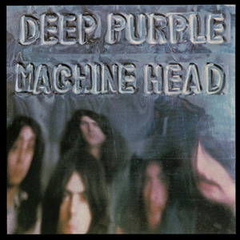
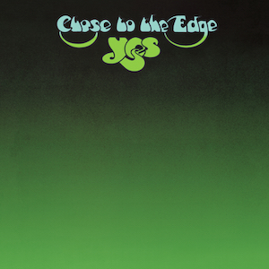
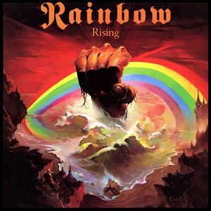
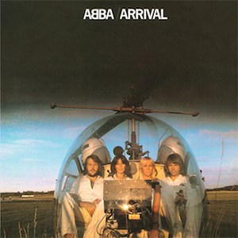

Classic albums from the 70s
Deep Purple
Machine Head

- Release date: 25 March 1972
- Genre: Classic Rock
- Read more on Wikipedia
Yes
Close to the Edge

- Release date: 13 September 1972
- Genre: Progressive Rock
- Read more on Wikipedia
Genesis
Foxtrot

- Release date: 6 October 1972
- Genre: Progressive Rock
- Read more on Wikipedia
Rainbow
Rising

- Release date: 17 May 1976
- Genre: Classic Rock
- Read more on Wikipedia
Abba
The Arrival

- Release date: 11 October 1976
- Genre: Pop
- Read more on Wikipedia
Pink Floyd
Animals

- Release date: 21 January 1977
- Genre: Progressive Rock
- Read more on Wikipedia